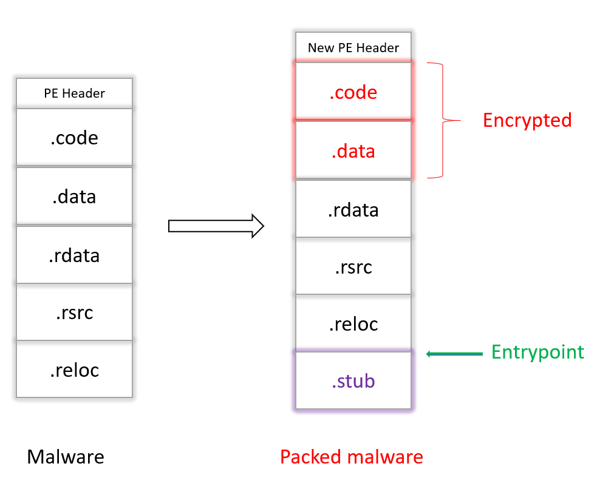
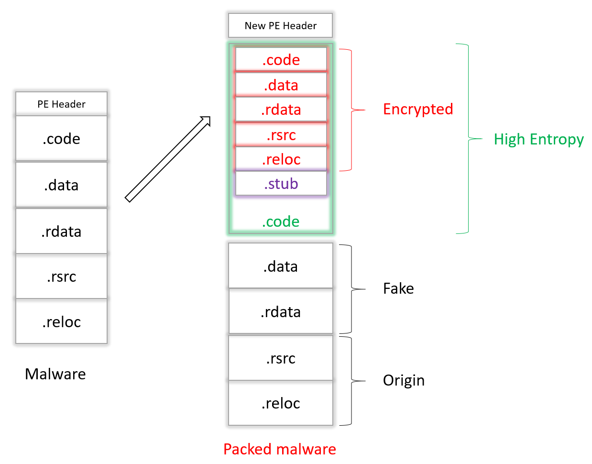
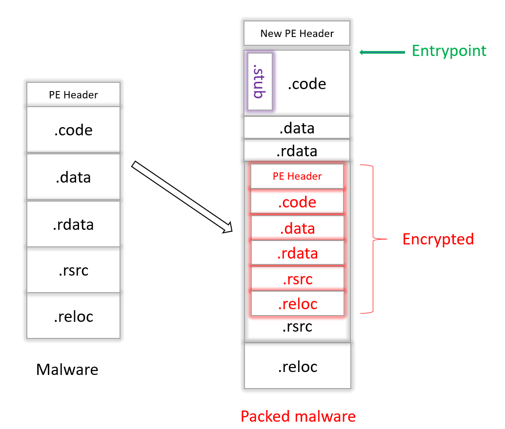

How packers work ?

In malware creation process, obfuscation of this one is essential in order to avoid detection and make reverse engineering difficult. Packing is a type of obfuscation techniques.
There are multiple packing tools available and they are very easy to use, here some popular ones : UPX, Themida, VMProtect, ExeStealth, Aegis Crypter. But many malware authors use custom-made tools 😈 and that is why I made this post to give you a good idea of how it works 😉
Well, for those who do not know what it is, here is a very quick definition :
packing is the
transformation of un executable to another one with a specific file system footprint.
Think of it as the process of encrypting the first executable (malware created) and appending a piece of code called "stub" to it in order to decrypt it later to be executed on the target system. As for the stub, it is just a piece of code that contains the decryption agent used to decrypt the packed malware.
A packer can be useful against static analysis because it changes the signature of the file which circumvent such a thing. To make a packer, we have two main chalenges :
- First of all, we have to create the stub which requires a good knowledge of the target architecture, so if, for example, we target a Windows-based system, we need to know the different system calls necessary to unpack, load and execute our malware thereafter 🤔
- Secondly, we need to inject the stub stealthily, for example as an additional section at the end of the first executable as you can see below. Check this post for more information about the PE format. 
⚠️ But wait a second, it is suspicious to do it this way because we have to point our "entrypoint" towards the stub which is so weird. Effectively, usually entrypoint points to the code section (the first section of an executable) and not to another section. Another technique is to create a new executable from the first one but by putting our stub in the code section and this is no longer suspect, because the code section will contain the encrypted data (our evil code) and the stub 😮 
Sorry but we will have another problem because the "entropy" of this new section will be high and does not look like a normal one which leads to detection. Do not worry, here is a solution 💡 :
- Add the encrypted data to the resource section of a legitimate process.
- Then overwrite a portion of code of this new one with the stub and your packed malware will look like this : 
Here are some techniques for getting around antivirus and what I've mentioned here should get you started. I hope you liked it and take care 😊
References :
Empirical identification, comparison and circumvention of current Antivirus detection techniques from blackhat materials.